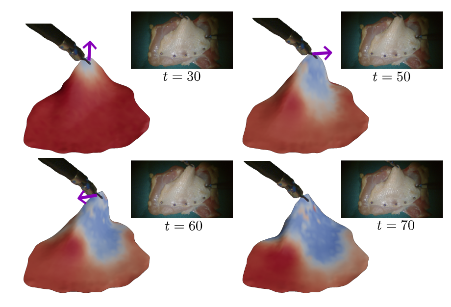
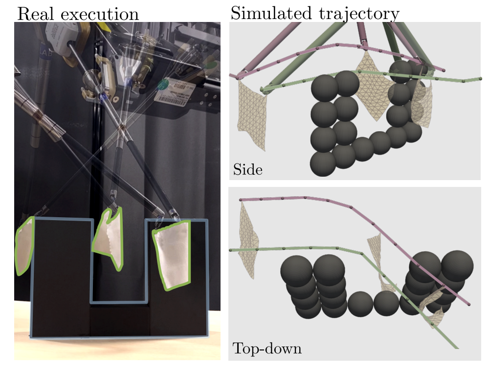
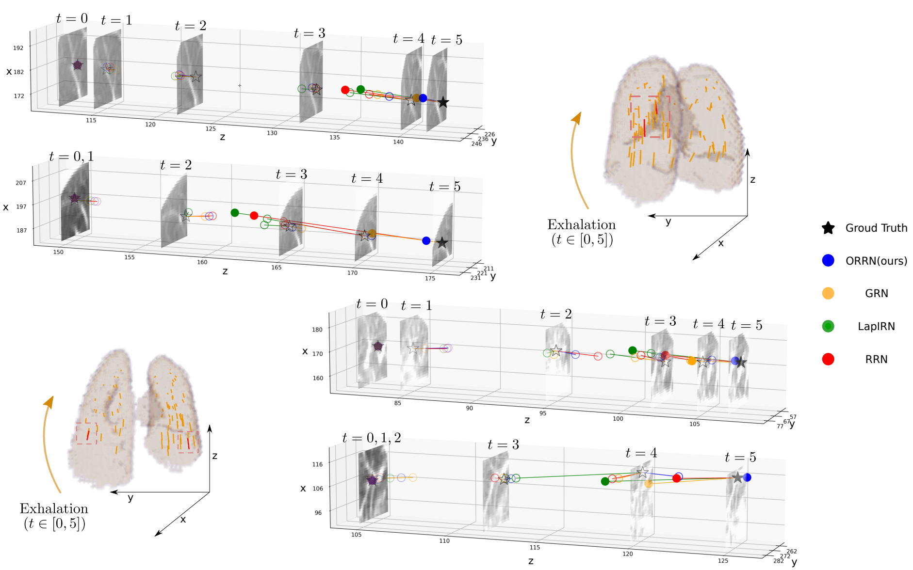
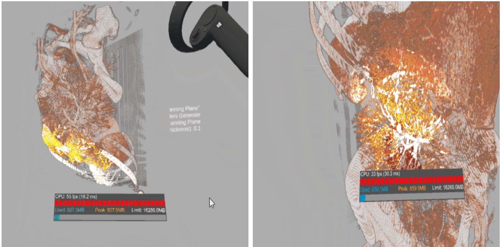
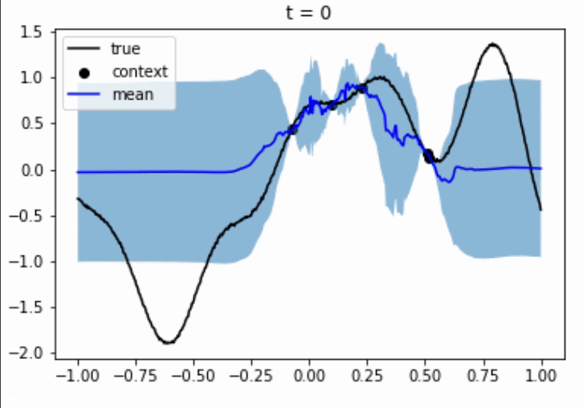

|
Research
I'm interested in the intersecting fields of robotics, physics simulation, and machine learning. I
develop machine learning algorithms and physics simulation models to achieve
robot autonomy in manipulation tasks, specially involving soft, deformable objects in surgical
scenarios.
|
|
Publications
|
|

|
Real-to-Sim Deformable Object Manipulation: Optimizing Physics Models with Residual
Mappings for Robotic Surgery
Xiao Liang*, Fei Liu*, Yutong Zhang, Yuelei Li, Shan Lin, Michael C. Yip
IEEE International Conference on Robotics and Automation (ICRA), 2024,
under review.
[arXiv]
|
|

|
Achieving Autonomous Cloth Manipulation with Optimal Control via Differentiable
Physics-Aware Regularization and Safety Constraints
Yutong Zhang*, Fei Liu*, Xiao Liang,Michael C. Yip
IEEE International Conference on Robotics and Automation (ICRA), 2024,
under review.
[arXiv]
|
|

|
ORRN: An ODE-Based Recursive Registration
Network for Deformable Respiratory Motion
Estimation With Lung 4DCT Images
Xiao Liang, Shan Lin, Fei Liu, Dimitri Schreiber, Michael C. Yip
IEEE Transactions on Biomedical Engineering (TBME), 2023
[arXiv] [code]
|
|
Other Projects
|
AR Interactive Cooking
An interactive application on Magic Leap's Mixed Reality device with semantic awareness powered by cloud-based deep learning models.
[website] [code]
|
VR Volume Rendering

Developed a real-time, interactive, volume rendering algorithm for visualizing 3D medical image in Head-mounted Virtual Reality.
[summary] [code]
|
Neural Process Safe Exploration

Developed a neural process guided safe exploration algorithm for polynial functions exploration and a movie recommendation problem.
[summary] [code]
|
Website templete from here.
|
|